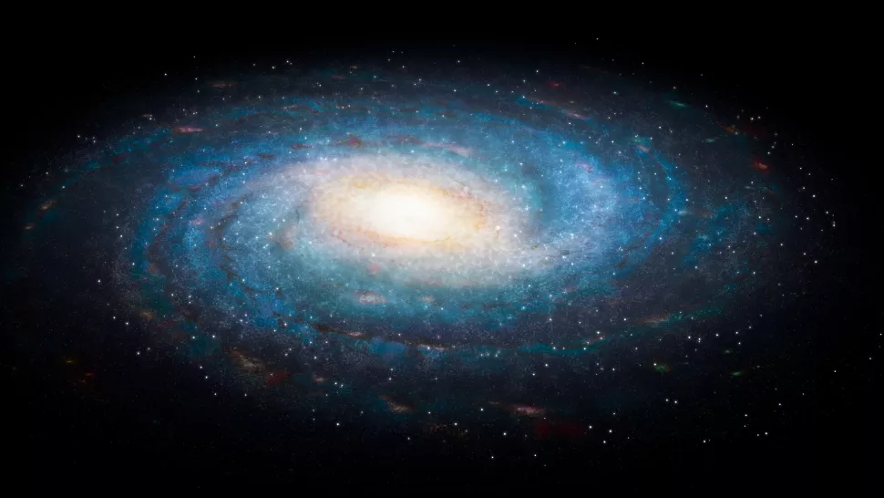
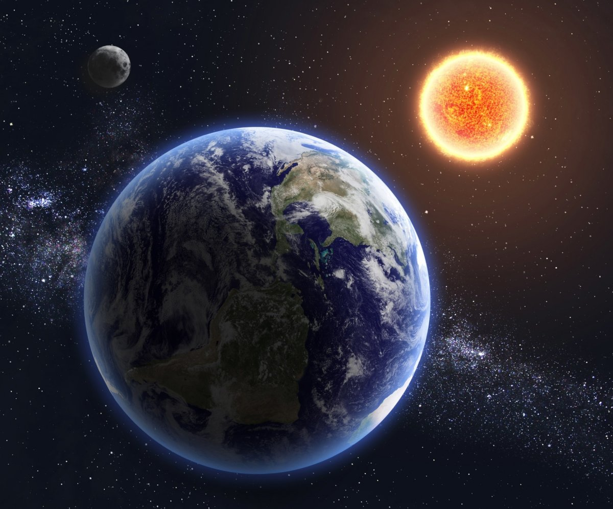

Solar System
The Solar System is a planetary system comprising the central star Sun and all the natural space objects orbiting it heliocentrically. It formed by gravitational collapse of a gas-dust cloud about 4.57 billion years ago.

System Structure
The four innermost planets, known as the terrestrial planets — Mercury, Venus, Earth, and Mars — are primarily composed of silicates and metals. The four outer planets, known as the gas giants — Jupiter, Saturn, Uranus, and Neptune — are much more massive than the terrestrial planets. The largest gas giants in the Solar System, Jupiter and Saturn, consist mainly of hydrogen and helium and are therefore referred to as gas giants; the smaller gas giants, Uranus and Neptune, besides hydrogen and helium, predominantly contain water, methane, and ammonia, such planets are classified as "ice giants". Six of the eight planets and four of the dwarf planets have natural satellites. Jupiter, Saturn, Uranus, and Neptune are surrounded by rings of dust and other particles.

The Solar System has two regions filled with small bodies. The asteroid belt, located between Mars and Jupiter, is similar in composition to the terrestrial planets as it is composed of silicates and metals. The largest objects in the asteroid belt are the dwarf planet Ceres and the asteroids Pallas, Vesta, and Hygiea. Beyond Neptune's orbit lie trans-Neptunian objects consisting of frozen water, ammonia, and methane, the largest of which are Pluto, Haumea, Makemake, Quaoar, Orcus, Eris, and Sedna. There are other populations of small bodies in the Solar System, such as planetary quasi-satellites and trojans, near-Earth asteroids, centaurs, damocloids, as well as comets, meteoroids, and interplanetary dust moving throughout the system.
The Solar System is part of the structure of the Milky Way galaxy.
Classification of Solar System Objects by Composition and Shape
All objects orbiting the Sun are officially divided into three categories: planets, dwarf planets, and small bodies of the Solar System. A planet is any body in orbit around the Sun that is massive enough to have achieved a nearly spherical shape but is not massive enough to initiate thermonuclear fusion and has cleared its orbital region of planetesimals. A dwarf planet is a celestial body orbiting the Sun that is powerful enough to maintain a shape close to spherical under the influence of its own gravitational forces, but has not cleared its orbital region of planetesimals and is not a satellite of a planet. The objects that remain around the Sun are the small bodies of the Solar System.
The terms gas, ice, and rock are used to describe different classes of substances encountered throughout the Solar System. Rock is used to describe compounds with high condensation or melting temperatures that remained solid in the protoplanetary nebula under most conditions. Rocky compounds typically include silicates and metals such as iron and nickel. They dominate the inner part of the Solar System, forming the majority of the terrestrial planets and asteroids. Gases are substances with extremely low melting temperatures and high vapor pressures, such as molecular hydrogen, helium, and neon, which were always in gaseous state in the nebula. They predominate in the middle part of the Solar System, comprising most of Jupiter and Saturn. Ices of substances such as water, methane, ammonia, hydrogen sulfide, and carbon dioxide have melting temperatures up to a few hundred kelvins, and their thermodynamic phase depends on ambient pressure and temperature. They can occur as ices, liquids, or gases in different regions of the Solar System, in the nebula they were in solid or gaseous phase. Most moons of the giant planets contain icy substances, they also form the majority of Uranus and Neptune (so-called "ice giants") and numerous small objects located beyond Neptune's orbit. Gases and ices together are classified as volatile substances.
